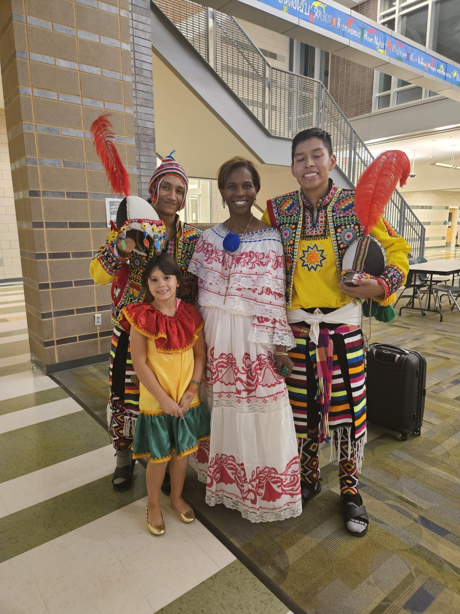
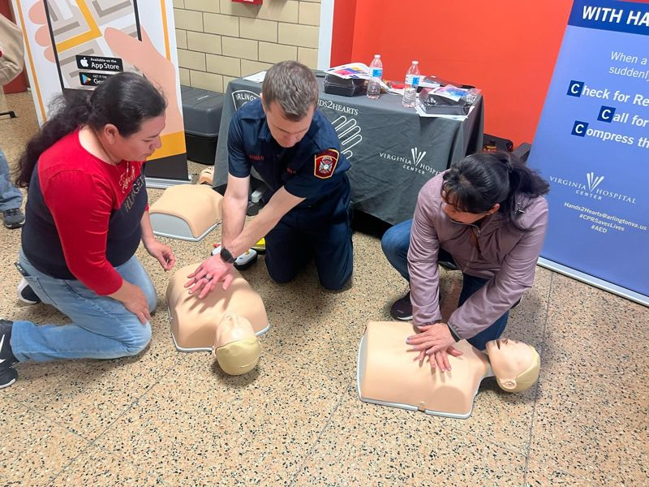

Arlington County recognized a strong existing partnership with Edu-Futuro, a nonprofit serving immigrant families across Northern Virginia with educational and social services. Through the community schools grant, the division is expanding that work. At Wakefield High School and Arlington Community School, Edu-Futuro specialists are coordinating cultural celebrations and connecting families to resources like Hands2Hearts CPR training through the Virginia Hospital Center.
A family needs assessment surfaced concrete barriers Arlington is working to address, including adding bilingual front desk staff, a gap that made it harder to navigate school communication. Families who had not previously engaged with the school are now attending events, building trust with specialists, and beginning to advocate for their children's needs.

